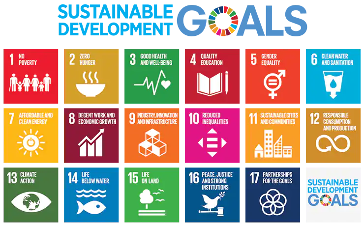
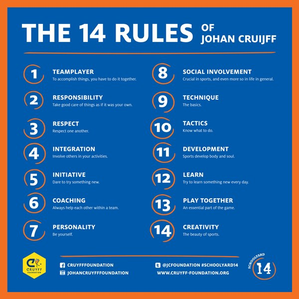
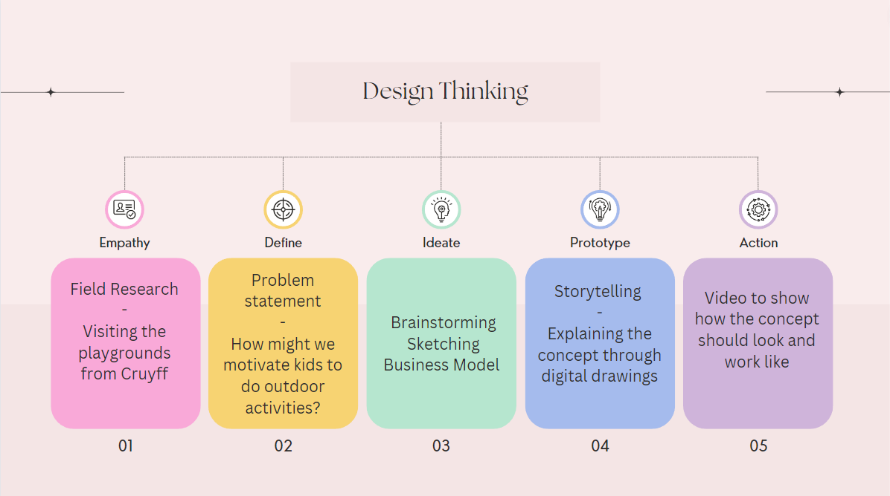
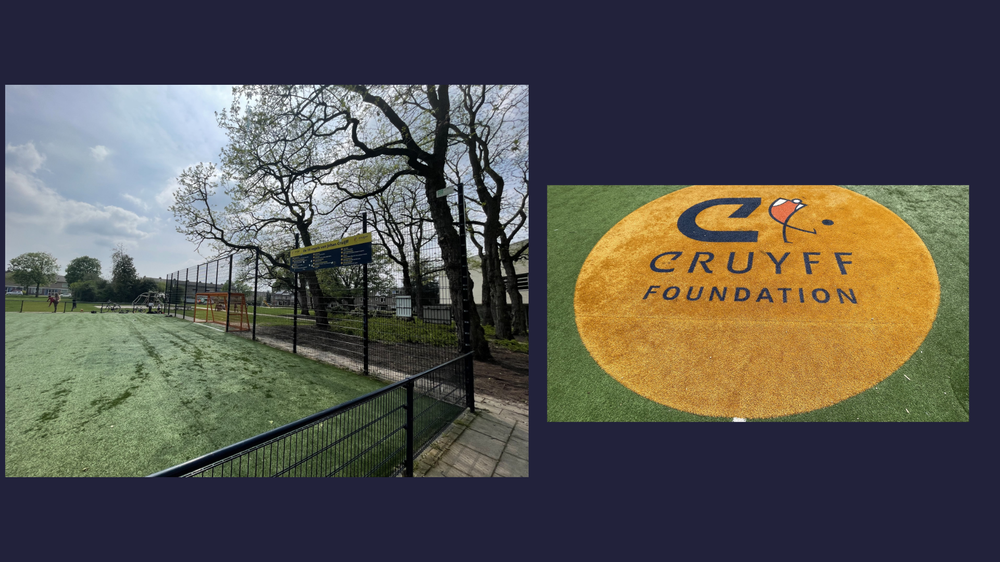

-
Introduction
In week 11 and 12 we had the opportunity to work on a design challenge alongside students from different countries and with different educational backgrounds. The event is called the Dutch Design Charrette and the goal is to work and communicate with people from diverse cultures and learning to listen to each others opinions and way of working.
What is a Design Charrette?
A charrette is an intensive, collaborative process that brings together students, community members and professionals to develop innovative solutions for complex issues. Over a few short days of brainstorming, discussion and expert consultation, teams create a broad range of ideas around a central theme. (source: Fontys Charrette flyer)
Each design challenge during the Design Charrette is based on the SDG goals (Sustainable Development Goals):
“In what way can new technologies contribute to reaching (one of the) Sustainable Development Goals”
(source: https://sdgs.un.org/goals)
Week 1
The first week of the Dutch Design Charrette took place online and was all about meeting new students, getting to know each other and listen to inspiring talks by people from different companies. The students were split into groups and urged to find a social platform to communicate. Our group, The Brilliant Strategists, decided to talk with each other via Discord. The team had students from Netherlands, Bulgaria, Romania, France, Germany and Belgium.

After getting to know each other more, we were tasked with creating an avatar that represents us. We could choose to either draw it ourselves or to use AI to create an avatar easier and faster.
Another assignment we had was to research into invasive plants in our own countries. I conducted a short Literature Study of invasive plants in Romania.
At the end of the week each group had to create a poster that contains all of the avatars of each group member plus all the information gathered during the research. This was our poster.
Week 2
The second week of the Dutch Design Charrette took place on Fontys grounds. We were finally able to meet the students from other countries in person. On the first day we found out that our stakeholder for the design challenge will be The Cruyff Foundation. The plan for second week was to communicate with stakeholder and find out more about the assignment, working on the project and at the end create a video of the prototype that will be shown in front of all the participants and collaborators. In the end the group with the most interesting concept will win the Dutch Design Charrette.
-
The Context
The Stakeholder
The Cruyff Foundation gives children in both regular and special education space to sport and play together both during and after school. In addition to the schoolyard, Schoolyard14 ensures that you can fully utilise the schoolyard by providing a prepa-ratory lesson package, a sports package, a games box and a sign with the 14 rules of Johan Cruyff. Their Schoolyard14 makes schoolyards an attractive place to play by giving the children the opportunity to pick their own playing fields and giving them an inclusive sports education space to play together both during and after school.
(source: https://www.cruyff-foundation.org/en/about/14-rules/)
Problem Statement
Cruyff Foundation was created to encourage children to play more outside. However, there is a technological innovation needed which motivates children to move more often. Cruyff Foundation stated that today, 25% of children are not exercising enough. A negative effect is a decline in motor and social skills. In addition, 15.5% of all elementary school children are overweight. That is the goal of the foundation, to bring new insights on how to motivate children to play and move more outdoors in the Schoolyard 14.
The assignment
The assignment from Cruyff Foundation is to develop a technological innovation with which children and young people play and move more outdoors in and around Schoolyard 14. We could even find a way to design the schoolyard or the school building to stimulate children to play more outside.
-
Approach
We were tasked with working according to the design thinking method during this desing challenge. These are the steps we followed:
During this project we always had the following in mind: How might we motivate children to do outdoor activities?
-
Process
Our first task was to communicate with the stakeholder and ask more questions about the project and what is to be expected of us. We were curious about the 14 rules, if we can create our own rule, if we can create a completely new activity and so on.
After gathering enough information from the stakeholder meeting, the empathize phase started. Our team conducted a field observation, to see and get an idea of how Cruyff court and schoolyard actually work. We visited a football court owned by Cruyff Foundation and observed how children interact with it and if they play the activity created by the foundation. We observed that some children were playing football while others created their own activities. We also saw that not that many children were present by the time we visited, which proves the statement of the foundation.
From out observation we were able to define our designers position on the schoolyard project: imaging a new game that would require teamwork in order to fully function.
Along the week we had valuable talks with our mentors, giving us feedback on our ideas.
This field observation was a great foundation for the brainstorm session. Each one of us came up with multiple ideas that can help enhance the football court and motivate children to play more there. It was very interesting to hear everyone give their own input and insights. The result of the brainstorm session was this.
The first brainstorm session sparked an idea that could make the football more appealing to the children by empowering it with technology. We sketched the idea on paper and all of us brought ideas to the table like: bracelet for children that can track their movement and turn it into a score. Based on the score children can receive rewards so that it can motivate them. Another idea was to place a big monitor next to the football court and have a mascot on it that motivates children and teaches them how to play and so on. Another idea was to have sensors that track when a child scores and light and music accompanied with applause will follow to encourage and congratulate the child. Every idea was put on paper and sketched out here.
The team showed our findings and ideas to the mentor and after some discussion we realized that maybe what we need to create for the children should be less with technology and more traditional but that could also work out with one of the Sustainable Development Goals.
A business model canvas was created to better understand the foundation, key partners, customer relationships and so on.
After defining values such as network construction, collaboration, teamwork and inclusivity, we were able to do another brainstorm around ideas that would answer our vision. Narrowing down to a final idea was possible through discussion with the whole team of what would be the most pertinent project.
-
Results
The final concept
Our concept focuses on the idea of creating a "playground network" and encouraging kids to play in groups.
The three group activities we came up with for the playground are:
1. a group swing where many kids can sit and swing together
2. a interactive trampoline field that generates different sounds based on the kids jumping patterns
3. a standing carrousel, where the kids are being spun by other kids or electrically.
All of these activities will be generating renewable energy while they are being used to power the activities themselves:
1. The group swing will be generating energy through its swinging motion
2. The trampoline field will be generating energy using the children's jumping motion
3. The carousel will be generating energy through its rotational movement
All of the energy created by the kids will then be redirected to a power station, where the kids can see how much energy they have already generated that day.
This power station can then provide energy for the playground activities that need electricity, like the sound for the trampoline field. The rest of the energy can be stored to provide energy for the school and its facilities, like the outdoor lighting for the playground. The Playground Network was sketched out on paper.
-
Conclusion
In conclusion we came up with a final concept that involves in creating a fully functioning circular system between the different activities that not only encourages kids to move more and have more fun, but also learn about sustainability and the importance of working as a team by involving electricity/energy. Seeing it in the future, it will always be possible to add activities which are motivating children to move and at the same time producing energy. Movement and energy complete themselves and create a never ending circle that will have a positive outcome over time.
This concept answers the following SDG: good health and well-being, quality education, affordable and clean energy.
At the end of the project we created a video that explains this concept. We recorded a transcript for the video and using iPads we created digital animations for the video to help visualize our concept.
-
Recommendations
New soundboards for trampolines
In the future, the children might get bored from the sounds that come from the trampolines. More soundboards can be introduced for it to stay interesting for children. These new soundboards can be obtained in several ways:
1. Holiday event (i.e. new soundboard with Halloween sounds)
2. Electricity goal (i.e. new soundboard with each 500KW produced)
3. Weekly soundboards (new soundboard every week)
Introducing new power-ups
New attractions can be introduced that can make use of the produced energy (power-ups). The excess produced energy can be used by the school. With these energy savings, the school can fund new power-ups.
Sparking curiosity
To make the schoolyard more inviting for children outside of the school, a path to the yard could make them curious to check out the schoolyard. To make it recognizable, the logo of Cruyff Foundation can be used, as well as their staple orange and blue colours. In the evening when it is dark, lights could spark interest for the children, while also providing them with safety.
-
Stakeholder Feedback
The stakeholder was happy with the concept our team came up with since Cruyff foundation also has something in mind that involves children creating energy through movement to create energy. The stakeholder did advice that we should look more in how these activities can actually be created. They were happy with our concept because it does not involve so much new technology and it is a more traditional way of playing outside. Since they were intrigued by our idea we were picked as winners out of the three groups that worked on the same project for the Cruyff foundation.
-
Reflection
I had the opportunity during this International Week to get to know students from other countries I have never visited but also I had the chance to work alongside students from Fontys that I never had the chance to work with. It was wonderful to collaborate on this Dutch Design Charrette alongside great people. Our team, the Brilliant Strategists worked hard during the international week to come up with a good concept for the Cruyff Foundation and in my opinion we delivered something great.
For me working alongside students from other countries is not new since Fontys has a lot of internationals but the students that came during this week had different educational backgrounds. It was very engaging for all of us to bring insights and ideas since IT students think more about technology while the architecture students thought more of how the structure and look of the concept can be created.
In the end, I learned how to work alongside with people that have different mindsets and different skills than me. I also learned to draw dynamic animations using Procreate that were used in the final presentation video.
In conclusion, the international week was a great opportunity to meet new people and collaborate with them on a very interesting and engaging project.